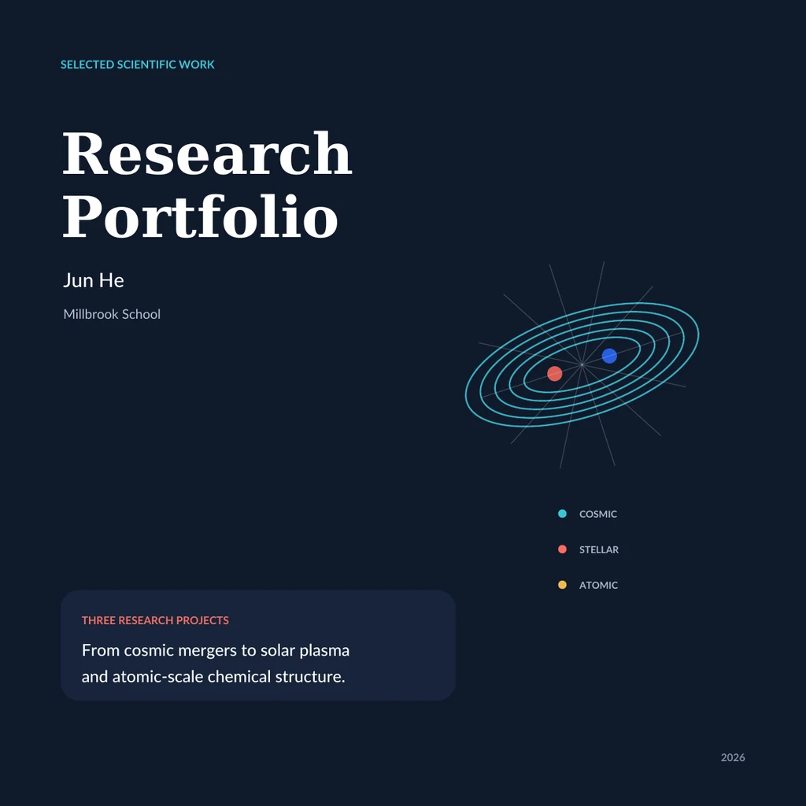
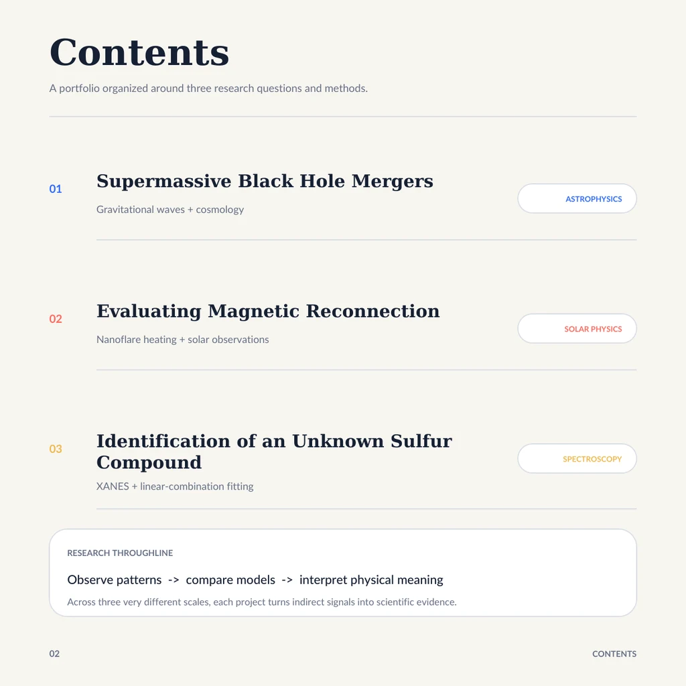
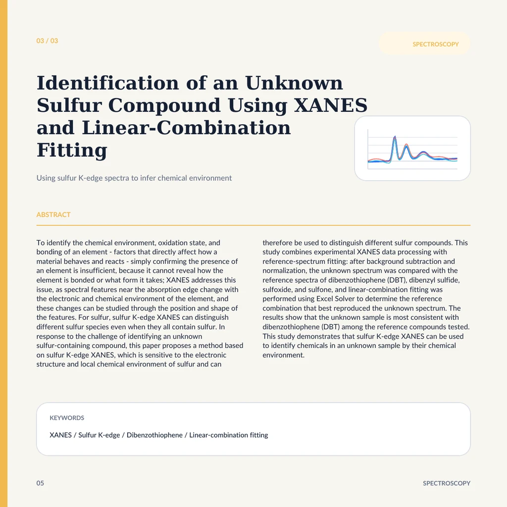

01 / Research
Three questions.
The work behind them.
From black-hole mergers and solar plasma to the sulfur environment of an unknown sample. Browse the evidence, then open the full paper.

Research paper
Reading a sulfur spectrum
One unknown sulfur spectrum, four references, and the limits of a match.
Research paper
What heats the corona?
Three studies connect predicted nanoflares with the Sun’s observed heating and cooling.
Research paper
When black holes merge
Black-hole mergers, gravitational waves, and the search for complementary signals.
A five-page overviewBrowse the research portfolio


